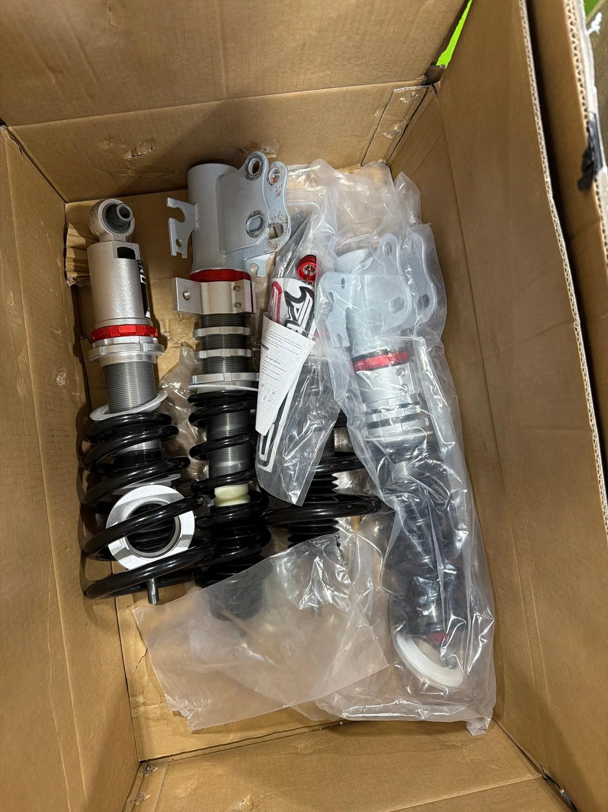

1 / 9Open Box Special:32-stopniowe zawieszenie gwintowane Do Pontiac G8 2008-2009 sedan & Holden Caprice 3rd Gen VM 2006-2013 PF008030
Unless there is a product quality issue, this product is not eligible for the 30-day return policy. This Open Box part comes with a 1-year Gwarancja. pojazd Compatibility Pontiac G8 (2008-2009 Sedan) Holden Commodore (4th Gen VE 2006-2013) - Sedan/Wagon/Ute Holden Calais (4th Gen VE 2006-2013) - Sedan/Wagon/Ute Holden Caprice (3rd Gen VM 2006-2013) Holden Statesman (3rd Gen VM 2006-2010) Package Contents Przednie ko...
Unless there is a product quality issue, this product is not eligible for the 30-day return policy. This Open Box part comes with a 1-year warranty. Vehicle Compatibility Pontiac G8 (2008-2009 Sedan) Holden Commodore (4th Gen VE 2006-2013) - Sedan/Wagon/Ute Holden Calais (4th Gen VE 2006-2013) - Sedan/Wagon/Ute Holden Caprice (3rd Gen VM 2006-2013) Holden Statesman (3rd Gen VM 2006-2010) Package Contents Front coilovers (2 units) Rear coilovers (2 units) Adjustment wrenches (2 units) Important Notice: This coilover system will lower your vehicle 1-1.5" (25-38mm) below factory height even at maximum adjustment setting. Please ensure this lowered stance meets your local regulations and driving requirements before purchase. Premium Features High-performance mono-tube design - 30% greater oil capacity than standard shocks for superior heat dissipation Precision height adjustment - Fine-tune your ride height with 1mm increments Spring pre-load adjustment - Optimize suspension geometry for your driving style Military-grade springs - Tested to 600,000 cycles with less than 0.04% deformation Integrated dust protection - Proprietary rubber boots extend damper lifespan Performance-tuned valving - Track-ready handling with street-friendly compliance Complete installation kit - Includes all necessary hardware for direct bolt-on installation Default 1-year warranty for any manufacturing defect, upgrade to 2 years with our Extended Warranty Program. Why Choose Our Open Box Parts? Open Box performance parts are the perfect choice for car enthusiasts looking to maximize their budget. These parts are still fully functional and are not at all affected when it comes to performance. These parts have minor install marks from customers attempting to install and failing due to fitment issues, or incorrect parts being ordered. They have scratches or nicks from being laid on rough concrete or improperly packaged for return shipping. Limited Availability - Order Now! We usually only have a limited selection of open box parts. It's not very often we have two or more of the same part so if you see it here and at a great price order ASAP. If you would like more photos or information feel free to reach out to us via live chat or email and we can provide more information before ordering. Warranty Information: Even though this is an Open Box product, we still stand behind the quality of our parts. All Open Box parts come with a 1-year warranty to give you peace of mind. If you encounter any issues with your purchase, please don’t hesitate to contact us. We are committed to providing top-notch service and ensuring your satisfaction, even with our discounted Open Box parts. Technical Specifications Front Spring Rate: 8 kg/mm (446 lbs/in) Rear Spring Rate: 10 kg/mm (557 lbs/in) Height Adjustment Range: 1-3.5" from base setting Camber Adjustment: Front: 1.5" (included) Rear: Requires aftermarket arms Damping Adjustment: 32-click rebound adjustment
3499,99 PLN
Opis produktu
Unless there is a product quality issue, this product is not eligible for the 30-day return policy. This Open Box part comes with a 1-year Gwarancja.
pojazd Compatibility
- Pontiac G8 (2008-2009 Sedan)
- Holden Commodore (4th Gen VE 2006-2013) - Sedan/Wagon/Ute
- Holden Calais (4th Gen VE 2006-2013) - Sedan/Wagon/Ute
- Holden Caprice (3rd Gen VM 2006-2013)
- Holden Statesman (3rd Gen VM 2006-2010)
Package Contents
- Przednie kolumny gwintowane (2 units)
- Tylne kolumny gwintowane (2 units)
- Adjustment wrenches (2 units)
Premium Cechy produktu
- High-performance mono-tube design- 30% greater oil capacity than standard shocks for superior heat dissipation
- Precision height adjustment- Fine-tune your ride height with 1mm increments
- Spring napięcie wstępne adjustment- Optimize suspension geometry for your driving style
- Military-grade springs- Tested to 600,000 cycles with less than 0.04% deformation
- Integrated dust protection- Proprietary gumowe osłony extend damper lifespan
- Performance-tuned valving- tor-ready prowadzenie with street-friendly compliance
- Complete installation kit- zawiera all necessary hardware for direct bolt-on installation
- Default 1-year Gwarancja for any manufacturing defect,upgrade to 2 years with our Extended Gwarancja Program.
Why Choose Our Open Box Parts?
Open Box performance parts are the perfect choice for car enthusiasts looking to maximize their budget. These parts are still fully functional and are not at all affected when it comes to performance. These parts have minor install marks from customers attempting to install and failing due to Dopasowanie issues, or incorrect parts being ordered. They have scratches or nicks from being laid on rough concrete or improperly packaged for return shipping.
Limited Availability - Order Now!
We usually only have a limited selection of open box parts. It's not very often we have two or more of the same part so if you see it here and at a great price order ASAP. If you would like more photos or information feel free to reach out to us via live chat or email and we can provide more information before ordering.
Gwarancja Information:
Even though this is an Open Box product, we still stand behind the quality of our parts. All Open Box parts come with a 1-year Gwarancja to give you peace of mind. If you encounter any issues with your purchase, please don’t hesitate to contact us. We are committed to providing top-notch service and ensuring your satisfaction, even with our discounted Open Box parts.
Technical Specyfikacja
| przód Spring Rate: | 8 kg/mm (446 lbs/in) |
| tył Spring Rate: | 10 kg/mm (557 lbs/in) |
| Height Adjustment Range: | 1-3.5" from base setting |
| Camber Adjustment: | przód: 1.5" (w zestawie) tył: Requires aftermarket arms |
| Damping Adjustment: | 32-click rebound adjustment |
Unless there is a product quality issue, this product is not eligible for the 30-day return policy. This Open Box part comes with a 1-year warranty.
Vehicle Compatibility
- Pontiac G8 (2008-2009 Sedan)
- Holden Commodore (4th Gen VE 2006-2013) - Sedan/Wagon/Ute
- Holden Calais (4th Gen VE 2006-2013) - Sedan/Wagon/Ute
- Holden Caprice (3rd Gen VM 2006-2013)
- Holden Statesman (3rd Gen VM 2006-2010)
Package Contents
- Front coilovers (2 units)
- Rear coilovers (2 units)
- Adjustment wrenches (2 units)
Premium Features
- High-performance mono-tube design - 30% greater oil capacity than standard shocks for superior heat dissipation
- Precision height adjustment - Fine-tune your ride height with 1mm increments
- Spring pre-load adjustment - Optimize suspension geometry for your driving style
- Military-grade springs - Tested to 600,000 cycles with less than 0.04% deformation
- Integrated dust protection - Proprietary rubber boots extend damper lifespan
- Performance-tuned valving - Track-ready handling with street-friendly compliance
- Complete installation kit - Includes all necessary hardware for direct bolt-on installation
- Default 1-year warranty for any manufacturing defect, upgrade to 2 years with our Extended Warranty Program.
Why Choose Our Open Box Parts?
Open Box performance parts are the perfect choice for car enthusiasts looking to maximize their budget. These parts are still fully functional and are not at all affected when it comes to performance. These parts have minor install marks from customers attempting to install and failing due to fitment issues, or incorrect parts being ordered. They have scratches or nicks from being laid on rough concrete or improperly packaged for return shipping.
Limited Availability - Order Now!
We usually only have a limited selection of open box parts. It's not very often we have two or more of the same part so if you see it here and at a great price order ASAP. If you would like more photos or information feel free to reach out to us via live chat or email and we can provide more information before ordering.
Warranty Information:
Even though this is an Open Box product, we still stand behind the quality of our parts. All Open Box parts come with a 1-year warranty to give you peace of mind. If you encounter any issues with your purchase, please don’t hesitate to contact us. We are committed to providing top-notch service and ensuring your satisfaction, even with our discounted Open Box parts.
Technical Specifications
| Front Spring Rate: | 8 kg/mm (446 lbs/in) |
| Rear Spring Rate: | 10 kg/mm (557 lbs/in) |
| Height Adjustment Range: | 1-3.5" from base setting |
| Camber Adjustment: | Front: 1.5" (included) Rear: Requires aftermarket arms |
| Damping Adjustment: | 32-click rebound adjustment |
FAPO Polska
Ten produkt obsługujemy lokalnie
Autoryzowana obsługa
FAPO Polska prowadzi katalog, kontakt i zamówienia bez odsyłania klienta do zewnętrznych sklepów.
Dobór po aucie
Sprawdzamy dopasowanie produktu do pojazdu, rocznika i wersji przed finalizacją zamówienia.
Wsparcie po zakupie
Masz kontakt w Polsce w sprawach zamówień, wysyłki, gwarancji i zwrotów.